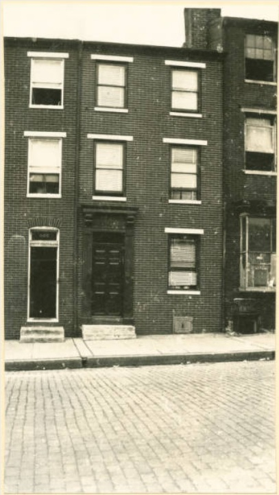

![]()

I was thrilled this morning to discover the April 15, 1939 entry from H.L. Mencken’s diary sharing an account of visiting the modest rowhouse on West Lexington Street where he was born in 1880. Mencken observed the blocks to the north being torn down for the development of the Poe Homes which broke ground later that year on October 11, 1939. New Deal slum clearance history and H.L. Mencken history? This is my lucky day.
“In going through some old bills I found the other day that the house I was born in was No. 380 W. Lexington street in 1880. I wrote to the Appeal Tax Court asking the present number and was informed that it is now 811. This morning I went down to Lexington street to have a look. I found a pleasant little three-story house, directly opposite a slum area that is being cleared off under the Federal housing scheme. The door of the place was open, and inside I found a colored man on a stepladder and a white man on another. The colored man told me that he was the new owner of the place. He had been living in his own house in the slum area, but the government had now condemned it. He told me that the price he got for it was considerably less than his investment. He had used the money to buy No. 811 and was now engaged in rehabilitating it. He was scraping the accumulated wallpaper off the parlor walls, and the white man, a plasterer, was patching the holes that this work revealed. The colored man seemed to be a very intelligent and decent fellow. He told me that he hoped some day to put in a central heating plant, and I was tempted to offer him the price. I’ll probably go back and see him at some time in the near future.
Fifteen or twenty years ago my mother pointed out the house to me, but after her death I could no longer identify it. It is a three-story building in a sad state of disrepair. When I was born in it West Lexington street was almost suburban. There were trees all along both curbs, and the roadway was hardly more than a country road. The whole neighborhood has been given over to Negroes for many years, and has steadily and rapidly deteriorated. As I have said, the block opposite has been condemned as one of the worst slums in Baltimore, and is to be pulled down and rebuilt. This condemnation apparently took no account of the fact that the colored man now renovating No. 811 owned his own house and made diligent efforts to keep it in repair. In even the worst slum areas there are plenty of such men. All the older streets of Baltimore show their thrift and industry. Unfortunately, their neighbors have deteriorated so vastly that their houses become almost uninhabitable. This poor man not only got an insufficient price for his own house; he was also compelled to pay an exaggerated price for his new one, for the rebuilding operations across the street will augment its value. He is one of the forgotten men who always suffer when schemes of uplift are afoot.”
Reuse
Citation
@online{pousson2012,
author = {Pousson, Eli},
title = {H.L. {Mencken} on the “Forgotten Men Who Always Suffer When
Schemes of Uplift Are Afoot”},
date = {2012-10-19},
url = {https://elipousson.github.io/posts/2012-10-19-h-l-mencken-on-the-forgotten-men-who-always-suffer-when-schemes-of-uplift-are-afoot},
langid = {en}
}